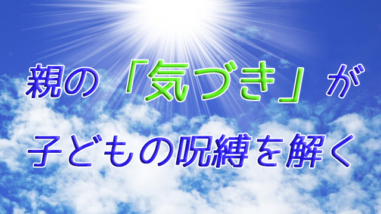
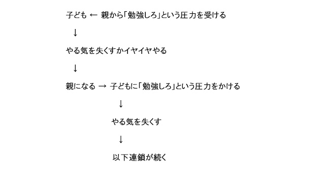

「ウチの子、勉強しなくて困ってます。どうすればやるようになりますか」という相談をしてくる親が相変わらず多い。
40年に渡って高校教師、塾講師をやってきたが親の悩みは常に変わらないと感じている。「ウチの子、勉強しなくて困ってます。どうすれば…」というセリフは歴代（？）の親が延々と繰り返してきた常套句なのだ。
つまり親が心の底から子どもに「勉強させたい」と思っているのではないということ。深く考えず自分も親から言われたことを繰り返しているに過ぎない。だから子どもの心に響かない。
以上の話を図式的に記すとこうなる。

いささかユーモラスに表現するなら、子ども時代親に「勉強しなさい」と言われてもあまり熱心にやらなかったのに、親になった途端我が子に「勉強して欲しい」という、いわば「勉強強制スイッチ」が入るということ。それを何世代も続けているという点。
ここから分かることは何だろう？
それはこうだ。親の「我が子に勉強して欲しい思い」は、実は子どものためを思ってというより、どちらかというと社会的常識に従わされてそう思わされてきたということだ。
ここでの社会常識とはもちろん勉強しないと上の学校に行けない→上の学校に行けないと（学歴がないと）良い働き口につけない→そうなったら安定した生活が送れない…という漠然とした不安のことだ。
「勉強しなさい」は強迫観念
要するに勉強しないと社会的に不利な立場に追い込まれるという恐怖であり、勉強しておけばリスクを回避できるという計算がある。
それが悪いというのではない。良い悪いの問題ではなく、親が子どもに勉強して欲しいのは純粋に勉強そのものの大切さを子どもに知ってもらいたいからではなく、百年以上に渡る日本の近代教育すなわち学歴社会の反映だということ。親の心底からの望みではないということだ。
「自分は子どもに勉強してもらいたいが、それは本心からの望みではないのではないか」そう気づくと後で述べるが親子関係は色々な意味で改善される可能性が高い。
しかし大抵の親は子どもの将来を思う（心配する）からこそ「勉強させたいのだ」と自分を納得させている。親からそう言われて育ち、大人になって社会の仕組みを知るにつけそれは真実だと確信しているからだ。
だが親が子どもに勉強させたいと強く願ったり、強制する以上子どもは熱心に勉強することはない。第一「やらされる」勉強ほど身につかないものはない。
このマイナスのループから脱け出るには、まず親が「なぜ子どもに勉強させたいか」を自らに問う姿勢をもつことだ。そうすれば先に言ったようにそれは心底から子どものためを思っているというより、代々社会にそう思わされてきたという事実に気づくだろう。
この「気づき」はとても重要だと私は思っている。「勉強しないと将来大変なことになる」という強迫観念は日本人にとって国民的病に近い。
ちょっと考えれば、子どもが少々勉強しないというだけでただちにその子の将来が台無しになるなどということはないと分かるはずだ。だから「ウチの子勉強しなくて困る」という思いが沸いてきたら、これは自分の本当の思い（不安）ではない。代々受け継がれてきた強迫観念、漂う雲のようなものだと見なしてしまえばよい。
その「気づき」が負の連鎖を断ち切る第1段階となる。
親が自分の言葉で「勉強の意義」を考える
この気づきを第1段階とするなら、親はさらに進めて第2段階すなわち「勉強することの意義」を自分なりに明確にして欲しい。今度は「勉強を通じて我が子がどんな人間に成長してもらいたいか」を考えるということだ。
といっても難しく考える必要はない。
「勉強することで視野を広くもつ」でもよいし「勉強の面白さを知って学び続ける人間」でもよい。
たとえ漠然としたあるいは抽象的なイメージであっても、親が自分の頭を使って勉強の意義を言語化したりイメージ化しておくことが大事だ。
そしてもっと大事なことは、その「意義」を子どもに直接伝える必要はないということ。聞かれたら答えてもよいが、無理に伝えようとするのは結局子どもに勉強するよう説得していることになり元のモクアミになる。
「それじゃ子どもは勉強しないままではないか」と思うかも知れないが、親の姿勢の変化は子どもに意外と伝わるものだ。少なくとも親が無自覚に「将来困るから勉強しなさい」と代々語り継がれた言葉をオウム返しに繰り返すよりずっとマシだ。
この姿勢でいれば親子関係自体が良い方向へと変化していく。なぜなら親は本心から子どものことを思っているからだ。それまでの社会常識に促されての不安や怖れからでなく、一人の親として我が子がどんな人間になって欲しいか考えたからだ。それは必ず子どもに伝わる。
子は親の変化を感じ取り信頼と愛を実感するようになる。すると不思議なことが起こる。
それまで勉強しなかった子が言われなくても進んでやるようになったり、部屋の片づけを始めたりする。これは親の気づきが負の連鎖―代々続いてきた呪縛―を断ち切ったからだ。長い間親子の頭上を覆っていた雲が取り払われ光が射し込んだ瞬間である。